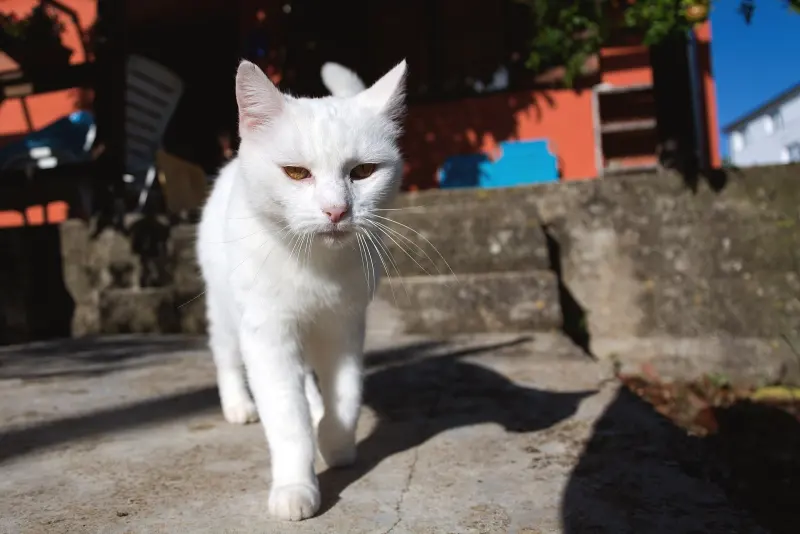
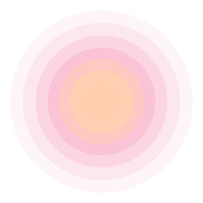
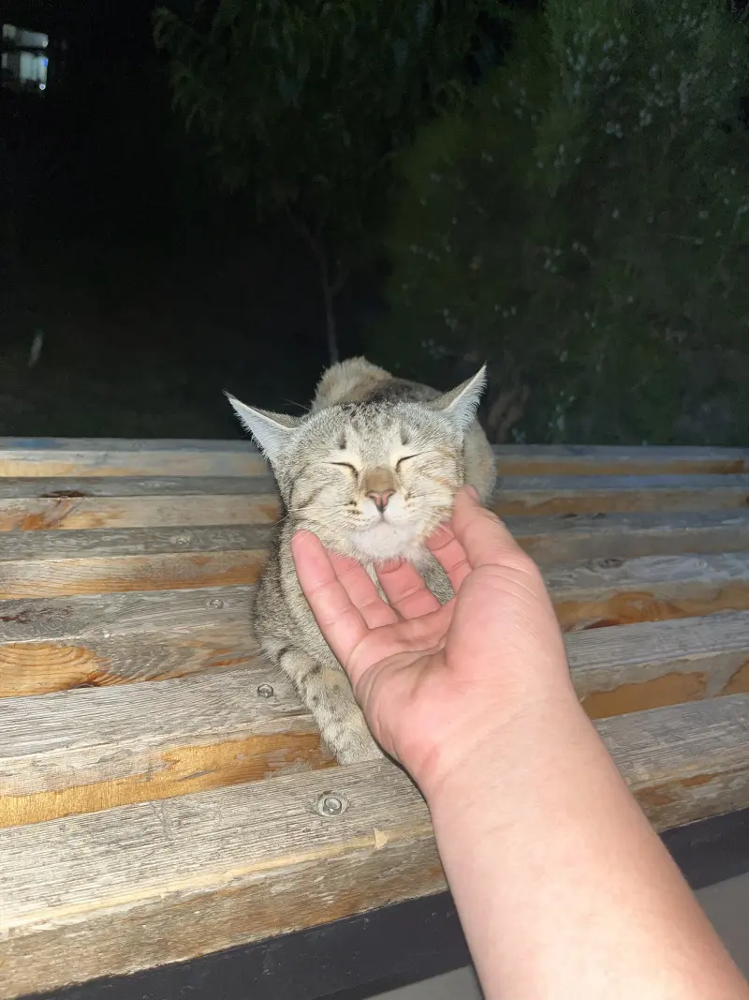
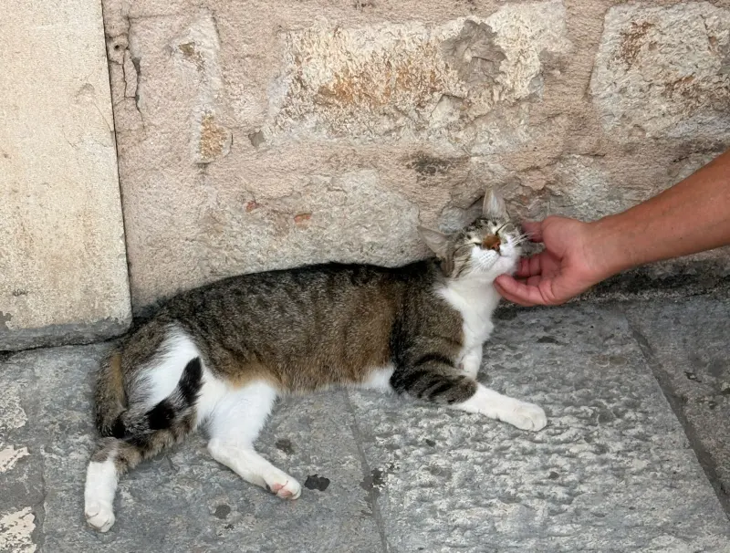
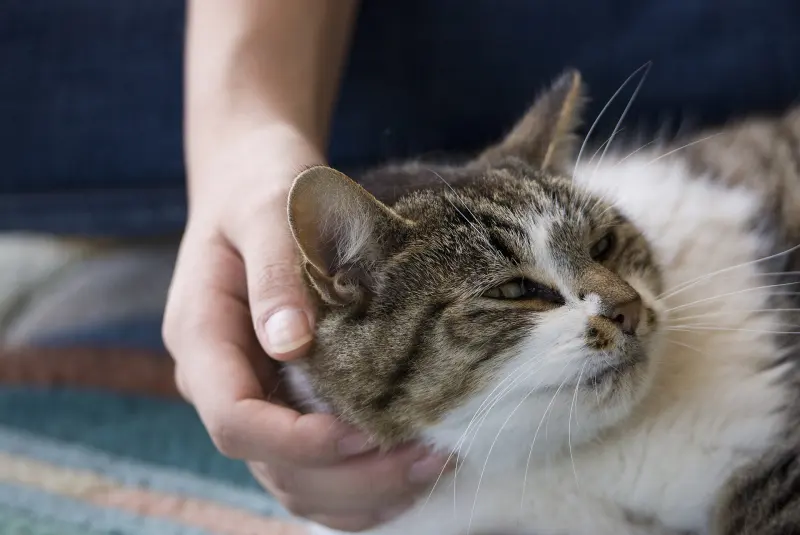
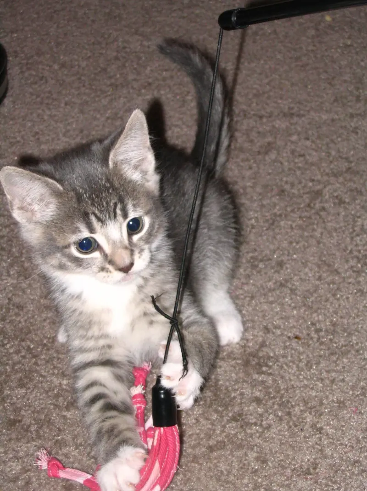
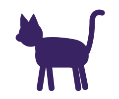
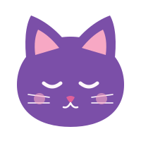
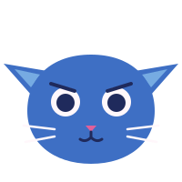
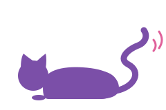

Tip 1
Let the cat come to you
Sit low, keep your hands still, and ignore the cat at first. Let it walk over and sniff you on its own schedule.
Seven practical, gentle tips for meeting a cat, building trust and reading its body language, so you know what to try at your next encounter.
7 tips and 4 body-language signs

Cats decide for themselves when to say hello, so the first minute is about being calm and patient.

Sit low, keep your hands still, and ignore the cat at first. Let it walk over and sniff you on its own schedule.

Look at the cat, then slowly close and open your eyes. Cats often blink back, a sign they feel safe with you.

Hold a closed hand or fingertip at nose height and let the cat sniff it. Pull back if it turns away.
Once the cat is relaxed, these habits help it see you as someone worth spending time with.


Most cats enjoy gentle strokes on the cheeks, chin and base of the ears. Skip the belly, and stop if the cat pulls away.
Drag a wand toy along the floor so the cat can chase it. Let it catch the toy now and then.
Give a small treat when the cat stays relaxed near you, so it links your company with good things. Keep portions tiny.
Sit so the cat has a clear path out, and let it leave whenever it wants. Never block a doorway or corner it.
Cats tell you how they feel with their tails, ears and eyes. Check these four signs before you reach out.

A friendly greeting. The cat is glad to see you.

Relaxed trust. The cat feels safe where it is.

Back off. The cat feels uneasy and needs space.

Overstimulated. Stop petting and give the cat a break.
A few common habits can make a cat wary, even when you mean well. Skip these four.
A long, fixed stare can feel like a threat to a cat. Look away or use a slow blink instead.
Cats like to choose when they move. Never chase one or lift it without an invitation.
Quick movements and raised voices can startle a cat and make it hide. Keep your tone soft and your moves slow.
Cats often roll over to relax, not to be rubbed. Touching the belly can lead to a swat, so stick to the cheeks.
Keep these four steps in mind at your next cat encounter.